第 8 讲：动画系统——从 2D 精灵到蒙皮骨骼与压缩
讲清游戏动画从精灵图、刚体层级到蒙皮骨骼的演进，以及骨骼空间变换、四元数插值与动画压缩的工程实现
◆ 学完这一讲，你应该能
能说出游戏动画的四大挑战（交互性、实时性、真实感、数据量），并解释它们如何影响引擎设计
能区分精灵动画、Live2D、刚体层级动画、顶点动画、Morph Target、蒙皮骨骼动画的适用场景与优缺点
能写出蒙皮矩阵的推导过程：绑定姿势、逆绑定矩阵、当前姿势矩阵如何组合
能解释欧拉角的万向节死锁与顺序依赖，并说明四元数为什么适合做旋转插值
能对比 NLERP 与 SLERP 的差异，并说明最短路径修正的作用
能列举动画压缩的至少四种手段（DoF 裁剪、关键帧提取、浮点量化、误差补偿）及其代价
核心结论速记
游戏动画的核心矛盾是「交互实时」与「数据量/真实感」之间的权衡，所有技术选择都围绕这个矛盾展开。
2D 精灵动画是赛璐珞动画的电子化，Live2D 用分层网格变形在 2D 上模拟 3D 感，成本低但视角受限。
3D 动画按自由度划分：刚体层级动画控制关节变换，顶点动画自由度最高但数据量最大，蒙皮骨骼动画是工业标准折中。
蒙皮矩阵 = 当前姿势矩阵 × 逆绑定矩阵，把顶点从绑定空间变换到当前姿势空间，再用权重混合多个关节的影响。
欧拉角有万向节死锁和顺序依赖，四元数用四个数表示旋转，插值更稳定，是骨骼旋转的标准表示。
NLERP 快但角速度不均匀，SLERP 角速度均匀但计算贵；小角度下两者几乎等价，实际引擎常按角度阈值切换。
动画压缩的本质是「在可接受的视觉误差内删数据」：裁掉不变的 DoF、抽关键帧、量化浮点、再用误差补偿兜底。
误差会沿骨骼层级传播，所以压缩精度要按关节敏感度自适应分配，而不是一刀切。
011. 游戏动画到底难在哪：四个绕不开的约束
在动手写骨骼插值之前，先要明白游戏动画和影视动画的根本区别。课件把挑战归纳为四类：
交互与动态（Interactive and dynamic）：影视动画是线性播放，游戏动画要根据玩家输入、物理状态、AI 决策实时变化。同一个角色可能上一帧在跑、下一帧被击中倒地，动画系统必须能立刻响应并平滑过渡。
实时性（Real-time）：每帧都要计算，预算通常是 16.6ms（60fps）甚至 8.3ms（120fps）里的一小部分。课件强调「compute per frame」和「massive animation data」，意味着动画数据要常驻内存、要能快速采样，不能像离线渲染那样慢慢解算。
真实感（Realism）：玩家期待更生动的表情、更可信的物理反馈。布娃娃（Ragdoll）、布料与流体模拟、反向运动学（IK）都是为此服务的，但它们都吃性能。
数据量（Massive data）：一个人类骨骼约 50~100 个关节，每个关节每帧有旋转、平移、缩放，乘以帧率和角色数量，原始数据轻松到 GB 级。所以课件后半段专门讲压缩。
把这四点记住，后面每一个技术选择都能对上号：精灵动画省性能但视角受限，蒙皮骨骼灵活但数据大，四元数插值稳定但要多算几步，压缩省内存但可能引入视觉误差。
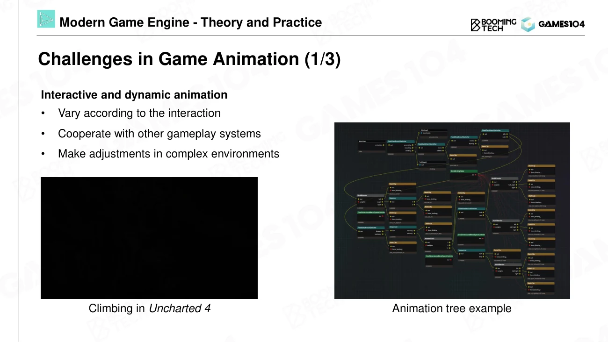
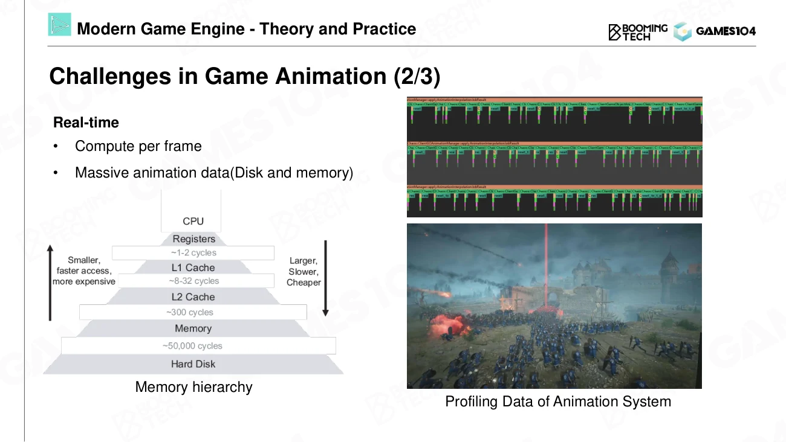
常见坑
把影视动画的「离线烘焙」思路直接搬到游戏 → 运行时卡顿 → 动画数据要预采样/压缩，运行时只做插值和混合。
忽略动画预算 → 角色一多就掉帧 → 用 Profiler 看 Anim 线程耗时，必要时降采样或开启动画压缩。
UE / Unity 落地
UE：Animation Budget Allocator 插件就是为「大量角色动画吃 CPU」设计的，可以按距离和重要性分配动画更新频率。
Unity：Animator 的 Culling Mode 可以设置「不可见时不更新」，对应实时性约束。
022. 2D 动画：精灵图与 Live2D 的分层变形
2D 动画是理解动画系统最好的入口，因为它把「帧」和「插值」的概念暴露得最直接。
精灵动画（Sprite Animation）是赛璐珞动画的电子等价物：一张小位图（sprite）按时间序列切换，就形成动画。课件提到多视角精灵（multi-view sprite），即同一个动作从不同角度各画一套，玩家转向时切换对应视角，伪 3D 游戏常用这招。它的优点是极省性能、美术可控；缺点是视角固定、内存随帧数线性增长。
Live2D 走的是另一条路：不建 3D 模型，而是把一张角色原画拆成多个部件（头发、眼睛、嘴巴、身体），每个部件做成带控制点的网格（ArtMesh），通过对网格做平移、旋转、变形来产生动画。课件描述了制作流程：准备资源 → 拆分部件 → 用控制点变形 → 设置关键帧让引擎插值。
Live2D 的关键洞察是：2D 角色也有「绑定」的概念，只不过绑的是网格控制点而不是骨骼。它的成本远低于 3D 建模，适合视觉小说、卡牌、直播皮套这类视角固定的场景；但一旦镜头要自由旋转，2D 分层就穿帮了。
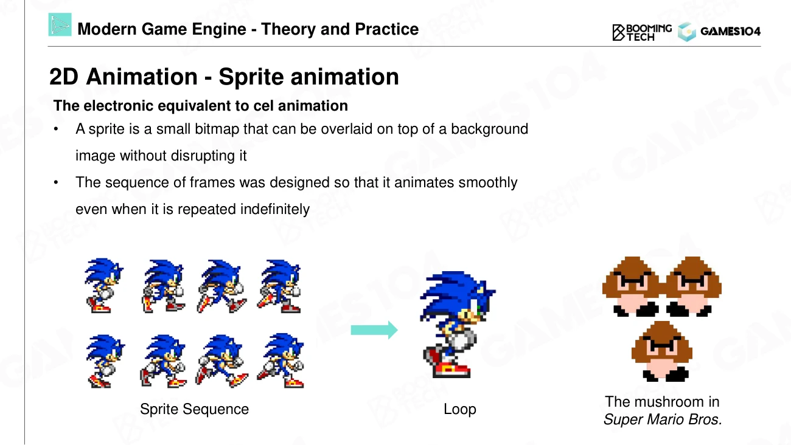
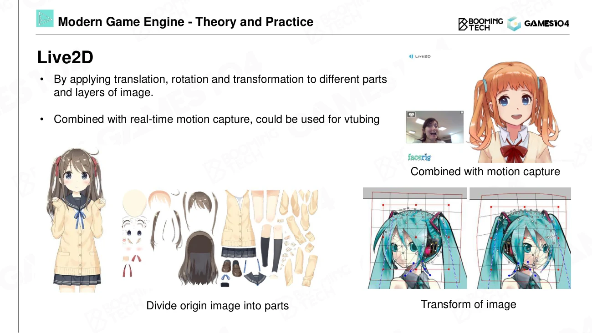
常见坑
精灵图集没有做图集（atlas）合并 → Draw Call 爆炸 → 把同一角色的帧打进一张图集，用 UV 偏移采样。
Live2D 部件拆分不合理（比如头发和脸画在同一层）→ 变形时互相拉扯 → 拆分时保证每个部件运动独立。
UE / Unity 落地
Unity：Sprite Renderer + Animator 做帧动画；Sprite Atlas 管理图集。
UE：Paper2D 插件提供 Sprite 和 Flipbook 资产，概念对应精灵动画。
Live2D 有官方 Unity SDK，UE 社区也有第三方插件，但非官方原生支持。
033. 3D 动画的五种做法：从刚体层级到蒙皮骨骼
进入 3D 后，课件用「自由度（DoF, Degrees of Freedom）」这个统一视角来分类。自由度就是一个系统独立变量的个数。
刚体层级动画（Rigid Hierarchical Animation）：角色由多个刚体部件组成，部件之间有父子关系，动画就是给每个关节设变换。这是最早的 3D 角色动画方式，像木偶。优点是简单、数据小；缺点是关节处会裂缝，皮肤不能连续变形。
顶点动画（Per-vertex Animation）：直接记录每个顶点每帧的位置，自由度最高、最灵活，但数据量爆炸。工程上常用顶点动画纹理（VAT, Vertex Animation Texture）把顶点位置烘到贴图里，在顶点着色器采样。适合布料、破碎、流体等难以用骨骼描述的效果。
Morph Target 动画：顶点动画的变体，不逐帧存，而是存若干关键形状（比如「微笑」「皱眉」），运行时用线性插值混合。面部表情动画的标配。
蒙皮骨骼动画（3D Skinned Animation）：网格绑定到骨骼关节上，每个顶点受多个关节加权影响。它是工业标准，兼顾数据量和表现力，也是本讲后半段的重点。
2D 蒙皮动画是 3D 蒙皮的降维版：把角色拆成身体部件，每个部件绑到 2D 骨骼上，适合横版动作游戏。
此外还有物理动画：布娃娃（Ragdoll）、布料/流体模拟、反向运动学（IK）。它们不是「播片」，而是每帧解算，常和骨骼动画混合使用（比如角色死亡时从动画切到布娃娃）。
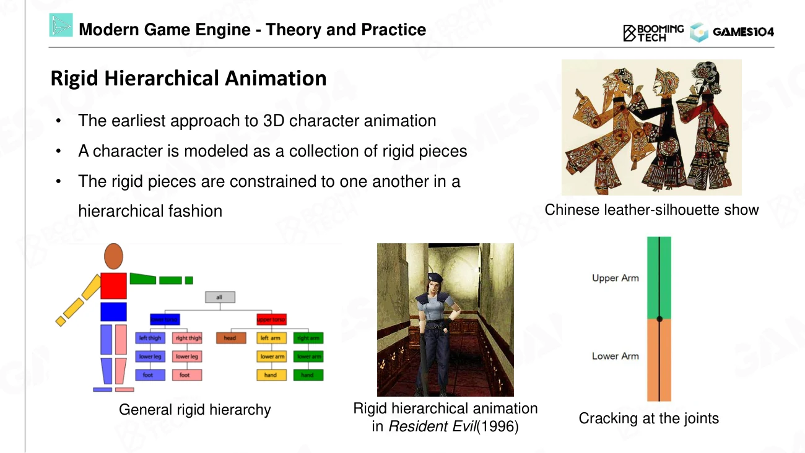
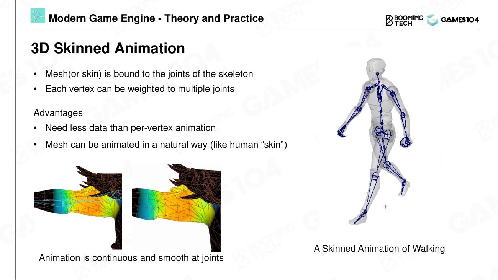
常见坑
把顶点动画当成万能方案 → 内存和带宽爆炸 → 只在骨骼难以表达的局部（面部、布料）用 VAT/Morph Target。
刚体层级动画不做关节遮盖 → 弯曲时露出缝隙 → 用重叠几何或改蒙皮。
UE / Unity 落地
UE：Skeletal Mesh 对应蒙皮骨骼动画；Morph Target 在 UE 里就是 Morph Target，常用于面部；Vertex Animation Tool 插件可烘 VAT。
Unity：Skinned Mesh Renderer 对应蒙皮；Blend Shape 对应 Morph Target；VAT 需要自己写 Shader 或买插件。
物理动画：UE 的 Physics Asset 驱动 Ragdoll，Unity 用 Ragdoll Wizard 或 Active Ragdoll 方案。
044. 骨骼、关节与绑定姿势：蒙皮动画的数据基础
要理解蒙皮，先把几个名词钉死。
关节（Joint）与骨骼（Bone）：课件特意区分——关节是动画师直接操作的对象，骨骼是关节之间的连接可视化。很多引擎里两者一一对应，术语混用，但概念上关节才是变换的载体。
骨架（Skeleton）是一棵关节的层级树，每个关节存相对于父关节的局部变换。人类骨骼通常 50~100 个关节，课件提到「normal: ~joints」，实际项目里 60~80 很常见。除了解剖关节，游戏还会加 gameplay 关节：武器挂点、坐骑挂点、摄像机挂点等，它们不参与蒙皮但参与逻辑。
根关节（Root Joint）通常放在双脚中心，方便贴地和位移提取；有些项目还会再加一个 Root Motion 节点在更外层。
绑定姿势（Bind Pose）是网格绑定到骨骼时的那一帧姿势，常见 T-pose 或 A-pose。T-pose 手臂水平，便于对称建模；A-pose 手臂下垂约 45 度，更接近自然站立，蒙皮权重计算更准。
不同空间要分清：局部空间（Local，相对父关节）、模型空间（Model，相对模型原点）、世界空间（World）。骨骼层级变换就是把局部空间逐级累乘到模型空间。
数学上，每个关节的姿势用一个仿射矩阵表示：旋转、平移、缩放组合。课件后面会给出局部到模型空间的递推公式。
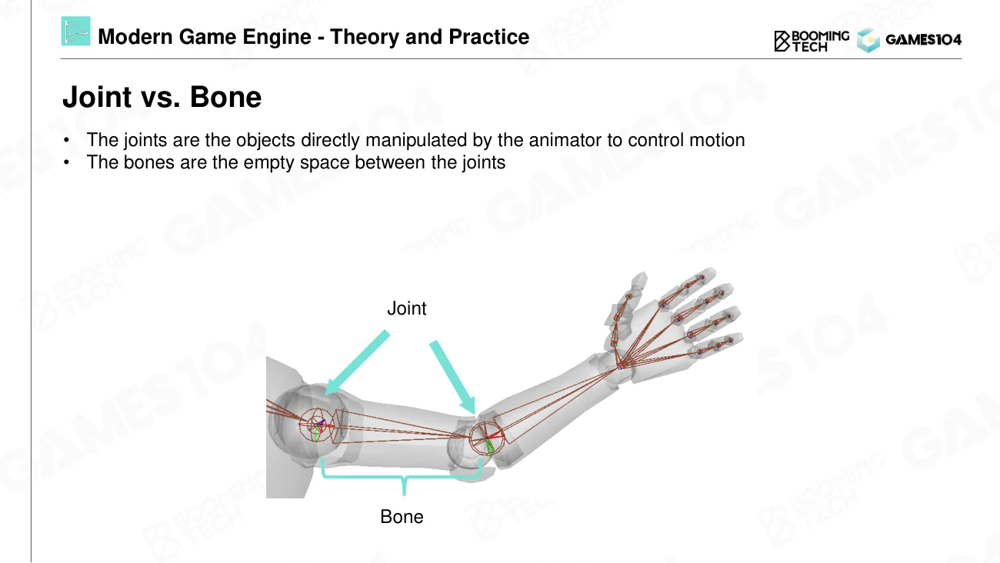
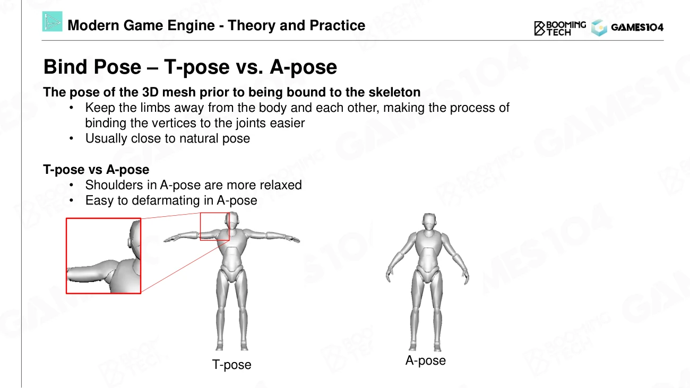
常见坑
绑定姿势和动画第一帧不一致 → 播放时模型跳一下 → 导出前确认 bind pose 与动画起始姿势匹配。
根关节位置随意放 → 位移提取和贴地逻辑错乱 → 根关节放在双脚中心，位移单独提取。
UE / Unity 落地
UE：Skeleton 资产定义关节层级，Physics Asset 复用同一套关节；Socket 就是 gameplay 关节的典型实现。
Unity：Avatar 定义人形骨骼映射，Humanoid 模式要求 T-pose 绑定。
055. 旋转的数学：欧拉角为什么不够用，四元数怎么救场
骨骼姿势里最麻烦的是旋转。课件花了大篇幅讲旋转数学，因为这是插值和压缩的基础。
欧拉角（Euler Angle）用绕 x、y、z 三个轴的旋转角描述朝向，直观、省空间，编辑器里到处都是。但它有两个致命问题：
- 顺序依赖（Order Dependence）：先绕 x 再绕 y，和先绕 y 再绕 x，结果不同。课件用「Path A / Path B」示意同一组角度不同顺序到达不同朝向。
- 万向节死锁（Gimbal Lock）：当中间轴的旋转达到 90 度时，另外两个轴重合，失去一个自由度。课件用陀螺仪和编辑器里的死锁现象演示。数学上就是两个旋转轴共线，导致退化。
四元数（Quaternion）用四个数 \( q = (w, x, y, z) \) 表示旋转，满足单位长度约束。它可以看作「轴角」的紧凑编码：绕单位轴 \( \mathbf{n} \) 转 \( \theta \) 角对应 \( q = (\cos(\theta/2), \sin(\theta/2)\mathbf{n}) \)。四元数的优势：
- 没有万向节死锁；
- 插值平滑（后面讲 NLERP/SLERP）；
- 组合旋转只需四元数乘法；
- 求逆只需取共轭（单位四元数）。
代价是四个数比三个数多，且需要归一化。课件还给了欧拉角转四元数、四元数转旋转矩阵、由轴角构造四元数等公式，这些在写引擎时都是工具函数。
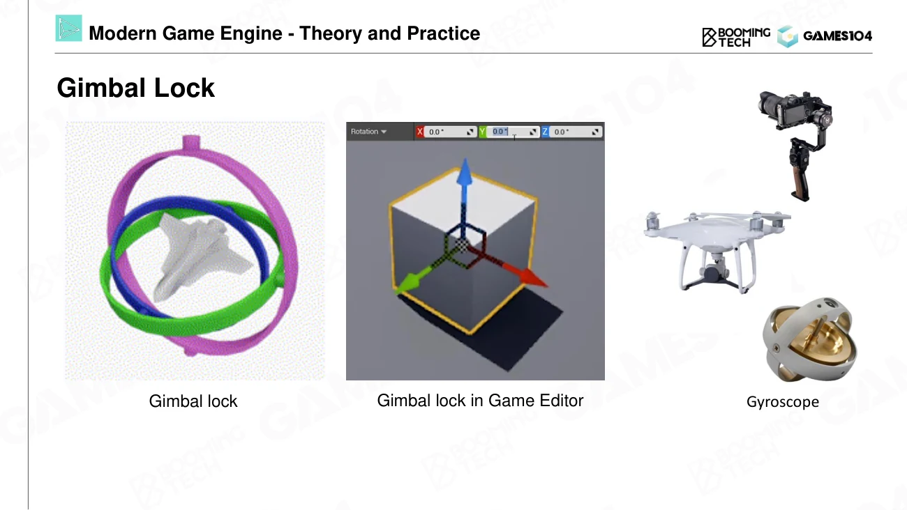
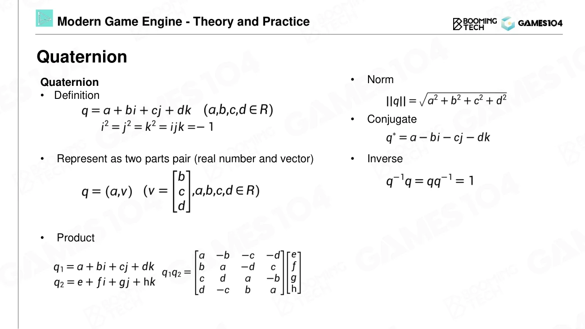
补充说明
课件里四元数公式较多，重点是记住「轴角编码 + 单位约束 + 共轭求逆」这三件事，具体推导可查教材。
常见坑
用欧拉角做骨骼插值 → 插值路径抖动或绕远路 → 旋转一律用四元数插值，欧拉角只用于 UI 展示。
四元数没归一化 → 旋转矩阵出现缩放/剪切 → 每次插值后 normalize。
UE / Unity 落地
UE：FQuat 是旋转的标准类型，FRotator 只是欧拉角展示层，内部转换用 FQuat。
Unity：Quaternion 类，Transform.rotation 就是四元数；Inspector 里显示的欧拉角只是方便人看。
四元数插值的伪代码（最短路径 + NLERP/SLERP 切换）（cpp）
Quat slerp(Quat a, Quat b, float t) {
float dot = a.x*b.x + a.y*b.y + a.z*b.z + a.w*b.w;
if (dot < 0) { b = -b; dot = -dot; } // 最短路径
if (dot > 0.9995f) { // 小角度用 NLERP
Quat r = lerp(a, b, t);
return normalize(r);
}
float theta = acos(dot);
float sinTheta = sin(theta);
float wa = sin((1-t)*theta) / sinTheta;
float wb = sin(t*theta) / sinTheta;
return a*wa + b*wb;
}066. 蒙皮矩阵：把顶点从绑定姿势搬到当前姿势
这是整讲最核心的公式。先给直觉：蒙皮就是「每个顶点跟着几个关节走，按权重混合」。
设网格顶点 \( V \) 在绑定姿势下绑定到关节 \( j \)。绑定姿势下关节 \( j \) 在模型空间的变换记为 \( B_j \)（bind pose matrix）。当前时刻 \( t \) 关节 \( j \) 的模型空间变换记为 \( P_j(t) \)（pose matrix）。
顶点 \( V \) 要先从模型空间变到关节 \( j \) 的局部空间，再跟着关节 \( j \) 的当前变换回到模型空间：
\[ V'_j = P_j(t) \cdot B_j^{-1} \cdot V \]
其中 \( B_j^{-1} \) 叫逆绑定矩阵（Inverse Bind Pose Matrix），通常在绑定时刻预计算好存起来。\( M_j(t) = P_j(t) \cdot B_j^{-1} \) 就是蒙皮矩阵（Skinning Matrix）。
一个顶点通常受 \( N \) 个关节影响（N 常为 4），每个关节有权重 \( w_i \)，且 \( \sum w_i = 1 \)。加权蒙皮公式：
\[ V' = \sum_{i=1}^{N} w_i \cdot M_i(t) \cdot V \]
工程上，引擎会把所有关节的蒙皮矩阵打包成蒙皮矩阵调色板（Skinning Matrix Palette），作为 uniform 数组传给 GPU，顶点着色器里按权重采样混合。这就是为什么骨骼数量会影响 Shader 常量缓冲区大小。
内存里表示骨架时，课件提到要存关节名（字符串或哈希）、父索引、局部变换、逆绑定矩阵等。调色板每帧更新，是动画系统 CPU 开销的大头之一。
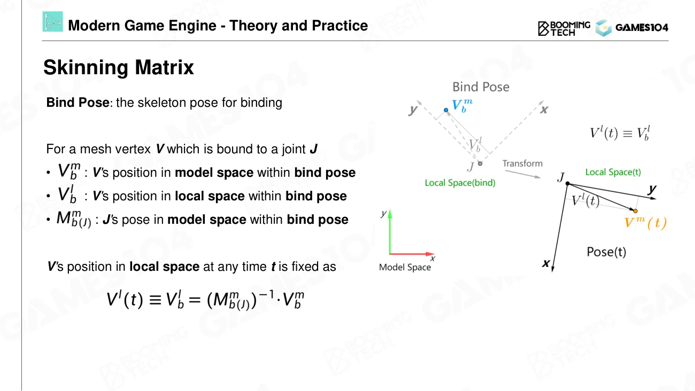
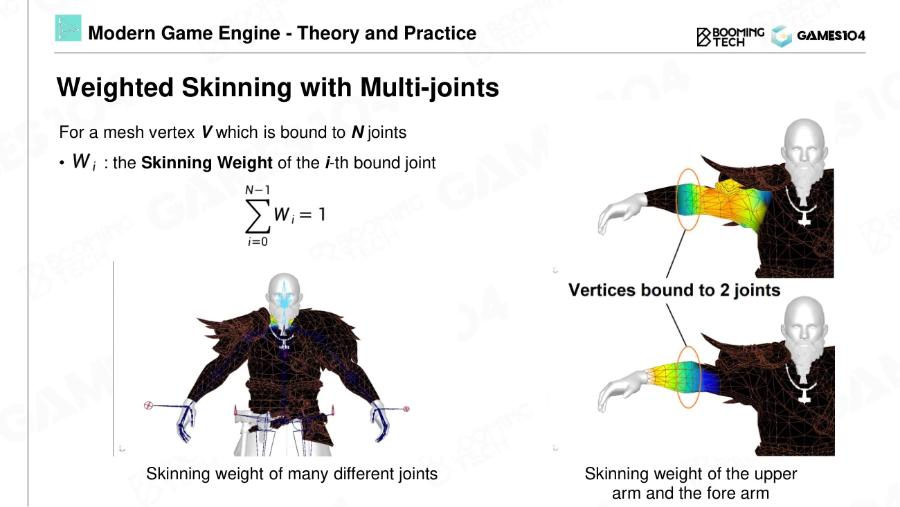
常见坑
逆绑定矩阵用当前姿势算 → 模型扭曲 → 逆绑定矩阵必须在绑定时刻算好并固定。
权重不归一化 → 顶点被拉向原点或过度缩放 → 导出前归一化权重，或运行时除以权重和。
骨骼数超过 Shader 常量缓冲区上限 → 部分骨骼失效 → 用骨骼纹理（bone texture）或分批绘制。
UE / Unity 落地
UE：Skeletal Mesh 的 Skin Weight 就是这套权重；GPU Skinning 在顶点着色器里执行，骨骼数多时自动切骨骼纹理。
Unity：Skinned Mesh Renderer 的 quality 设置可切 1/2/4 骨骼影响；Shader 里用 bone matrices 数组。
顶点着色器里的 4 骨骼蒙皮（伪代码）（hlsl）
float4 SkinPosition(float4 pos : POSITION, uint4 boneIdx : BLENDINDICES, float4 weights : BLENDWEIGHT) {
float4x4 m = weights.x * BoneMatrices[boneIdx.x]
+ weights.y * BoneMatrices[boneIdx.y]
+ weights.z * BoneMatrices[boneIdx.z]
+ weights.w * BoneMatrices[boneIdx.w];
return mul(m, pos);
}077. 姿势插值与运行时管线：从 Clip 到屏幕
动画片段（Clip）本质上是一串骨骼姿势（skeleton poses）的序列，每个姿势在时间轴上是一个关键帧。运行时要在关键帧之间插值。
平移和缩放用线性插值（LERP）：\( P = (1-t)P_0 + tP_1 \)。简单、够用。
旋转不能用 LERP，要用四元数插值。课件给了两个方案：
- NLERP（Normalized LERP）：先线性插值再归一化。计算便宜，但角速度不恒定——中间快两头慢，角度大时明显。
- SLERP（Spherical LERP）：在单位球面上沿大圆弧插值，角速度恒定，但涉及三角函数，贵一些。
两者都需要最短路径修正：如果两个四元数点积为负，说明它们在四维球面上「绕远路」，把其中一个取反即可。课件专门用一页讲这个。
实践上，角度小于某个阈值（比如 90 度）时 NLERP 和 SLERP 几乎没差别，引擎常按阈值切换，兼顾质量和性能。
运行时管线可以概括为：Clip + 时间 → 提取局部空间姿势 → 与上一帧插值 → 计算模型空间矩阵 → 生成蒙皮矩阵调色板 → 传给 GPU。课件用一页流程图把这串起来，注意「局部空间插值」而不是「模型空间插值」——后者是错的，因为父子变换会重复叠加。
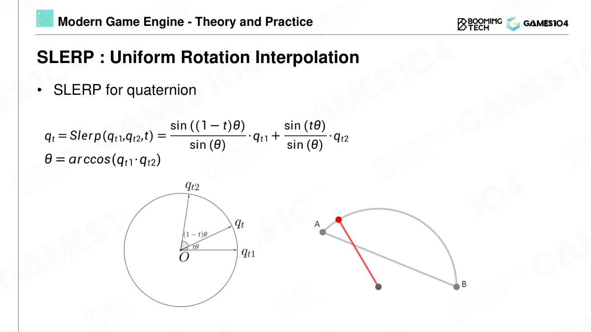
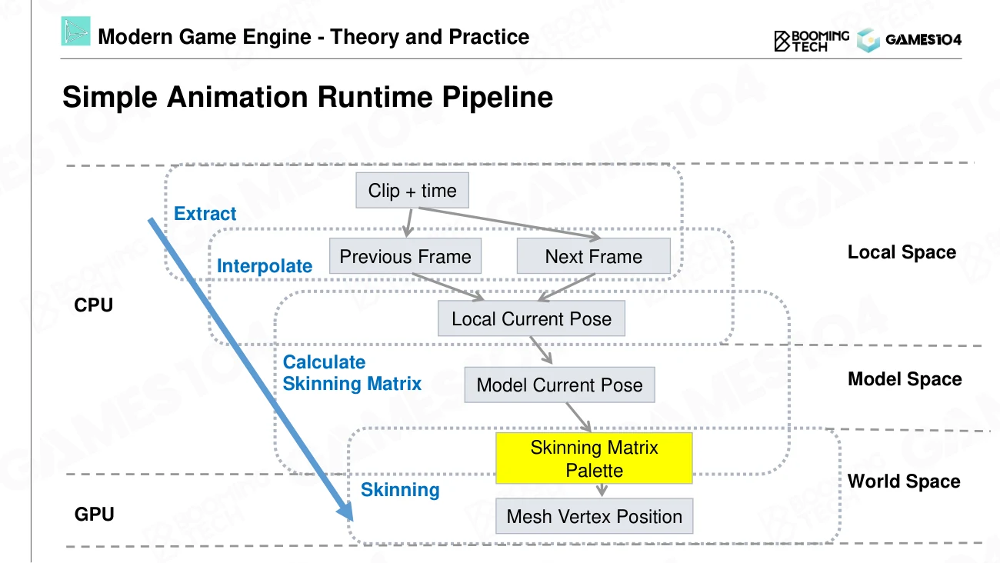
常见坑
在模型空间插值骨骼变换 → 父子旋转重复叠加，动作扭曲 → 必须在局部空间插值后再累乘到模型空间。
NLERP 不做最短路径修正 → 角色突然转一大圈 → 插值前检查点积符号，负则取反。
UE / Unity 落地
UE：Animation Blueprint 里的 Blend Space、State Machine 最终都落到局部空间姿势混合；FQuat::Slerp 是内置函数。
Unity：Animator 内部做四元数插值；Playable Graph 允许自定义混合逻辑。
088. 动画压缩：在视觉误差内把数据砍到十分之一
原始动画数据大到不可接受：课件估算单片段大小 = 帧数 × 关节数 × 每关节数据量，再乘以角色数和片段数，轻松上 GB。压缩分四步走。
第一步：DoF 裁剪（DoF Reduction）。人形骨骼的缩放通常不变，直接丢掉 scale 轨道；平移只有骨盆和面部关节需要，其余丢掉；旋转保留。这一步能砍掉一半以上数据。
第二步：关键帧提取（Keyframe Extraction）。不是每帧都存，只存「不能由插值拟合」的帧。课件讲了线性关键帧约简和 Catmull-Rom 样条拟合：用四个控制点生成曲线，检查误差是否超阈值，超了才保留该帧。
第三步：浮点量化（Float Quantization）。把 32 位浮点压成 16 位甚至更少。四元数有单位长度约束，可以只存三个分量，第四个由 \( w = \sqrt{1-x^2-y^2-z^2} \) 恢复，再用 2 bit 记录丢弃的是哪个分量。课件给了 16 位整数量化的例子。
第四步：误差补偿（Error Compensation）。压缩误差会沿骨骼层级传播，父关节的误差会放大到子关节。课件提出自适应误差边界（按关节敏感度分配精度）和原地修正（In Place Correction，选骨骼上的点做补偿）。
衡量精度有两种方式：数据误差（比较变换矩阵）和视觉误差（比较蒙皮后顶点位置）。视觉误差更贴近玩家感受，但计算贵，工程上常用「假顶点（fake vertex）」采样近似。
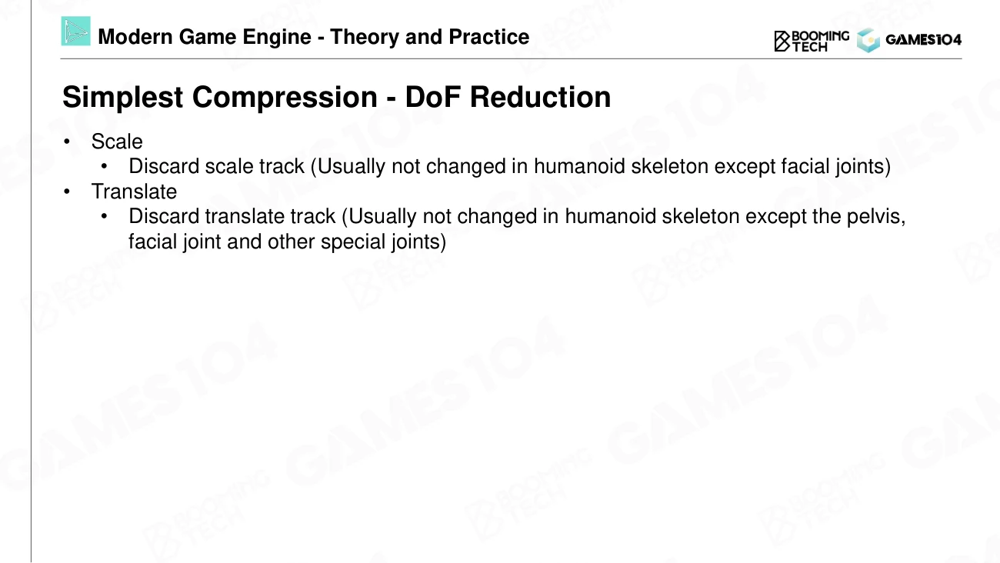
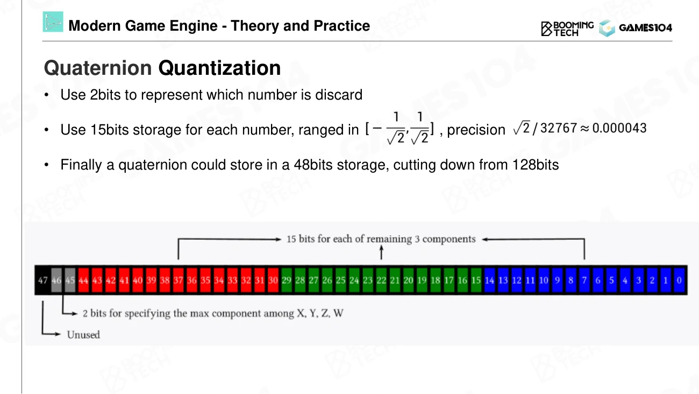
补充说明
课件里量化公式较多，核心记住「单位四元数只需三个分量 + 2 bit 符号位」即可。
常见坑
压缩阈值一刀切 → 面部表情或手指细节丢失 → 按关节敏感度自适应分配误差阈值。
量化后四元数不归一化 → 旋转矩阵出现缩放 → 解码后重新 normalize。
只看数据误差不看视觉误差 → 数据指标很好但玩家看得出抖动 → 用蒙皮后顶点位置做验收。
UE / Unity 落地
UE：Animation Compression Library（ACL）插件是业界常用的高质量压缩方案，支持多种压缩算法和误差控制。
Unity：Animation Compression 设置里有 Keyframe Reduction 和 Optimal 选项，本质就是关键帧提取 + 量化。
引擎对照表
| 概念 / 效果 | Unreal Engine | Unity |
|---|---|---|
蒙皮骨骼动画 | Skeletal Mesh + Skeleton 资产 | Skinned Mesh Renderer + Avatar |
Morph Target / 表情 | Morph Target | Blend Shape |
动画状态机与混合 | Animation Blueprint / State Machine / Blend Space | Animator Controller / Blend Tree |
物理动画（布娃娃） | Physics Asset + Ragdoll | Ragdoll Wizard / Active Ragdoll |
动画压缩 | Animation Compression Library (ACL) 插件 | Animation Compression（Keyframe Reduction / Optimal） |
游戏挂点 | Socket | Bone 节点 + 空物体挂点 |
术语双语表
| English | 中文 | 说明 |
|---|---|---|
| DoF (Degrees of Freedom) | 自由度 | 系统独立变量的个数，用来衡量动画技术的灵活度与数据量。 |
| Bind Pose | 绑定姿势 | 网格绑定到骨骼时的初始姿势，常见 T-pose 或 A-pose。 |
| Inverse Bind Pose Matrix | 逆绑定矩阵 | 把顶点从模型空间拉回关节局部空间的矩阵，绑定时刻预计算。 |
| Skinning Matrix | 蒙皮矩阵 | 当前姿势矩阵乘以逆绑定矩阵，把顶点从绑定姿势搬到当前姿势。 |
| Skinning Matrix Palette | 蒙皮矩阵调色板 | 所有关节蒙皮矩阵打包成的数组，传给 GPU 顶点着色器。 |
| Euler Angle | 欧拉角 | 用绕三个轴的旋转角描述朝向，直观但有顺序依赖和万向节死锁。 |
| Gimbal Lock | 万向节死锁 | 中间轴到 90 度时两轴重合，丢失一个自由度。 |
| Quaternion | 四元数 | 四个数表示旋转，无死锁、插值平滑，骨骼旋转的标准表示。 |
| NLERP / SLERP | 归一化线性插值 / 球面线性插值 | 四元数插值的两种方案，前者快但角速度不均，后者均匀但贵。 |
| Morph Target | 变形目标 | 预存若干关键形状，运行时线性混合，常用于面部表情。 |
课后练习
01 一个顶点 V 绑定到关节 j，绑定姿势下关节 j 的模型空间矩阵为 B_j，当前时刻为 P_j(t)。写出该顶点的蒙皮矩阵，并解释为什么需要逆矩阵。
查看答案
提示：
想想顶点在绑定姿势下处于什么空间。
蒙皮矩阵 M_j(t) = P_j(t) · B_j^{-1}。逆绑定矩阵 B_j^{-1} 把顶点从模型空间变换到关节 j 的局部空间（绑定时的局部坐标），这样再乘以当前姿势矩阵 P_j(t) 时，顶点就跟着关节一起动。没有逆矩阵，顶点会被重复施加绑定姿势的变换。
02 为什么骨骼旋转插值要用四元数而不是欧拉角？请至少说出两个原因。
查看答案
提示：
回忆万向节死锁和插值路径。
1）欧拉角有万向节死锁，中间轴到 90 度会丢失一个自由度，插值会出现突变；2）欧拉角有顺序依赖，且直接对三个角线性插值不能保证旋转路径最短、角速度均匀；四元数没有死锁，配合 SLERP 可以得到恒定角速度的最短路径插值。
03 NLERP 和 SLERP 有什么区别？在什么情况下可以放心用 NLERP？
查看答案
提示：
从角速度和计算成本两方面考虑。
NLERP 先线性插值再归一化，计算便宜，但角速度不恒定（中间快两头慢）；SLERP 在单位球面上沿大圆弧插值，角速度恒定，但涉及三角函数更贵。当两个四元数夹角很小（比如小于 90 度）时，两者结果几乎一致，可以放心用 NLERP。另外两者都需要最短路径修正（点积为负时取反）。
04 一个动画片段有 60 帧、80 个关节，每个关节每帧存旋转（四元数 4 个 float）、平移（3 个 float）、缩放（3 个 float），每个 float 4 字节。估算原始数据大小；如果裁掉缩放和平移、只保留旋转并量化到 48 bit，大小变成多少？
查看答案
提示：
先算每帧每关节字节数，再乘总帧数。
原始：每关节每帧 (4+3+3)×4 = 40 字节，总 60×80×40 = 192,000 字节 ≈ 187.5 KB。压缩后：只保留旋转，每个四元数 48 bit = 6 字节，总 60×80×6 = 28,800 字节 ≈ 28.1 KB，约为原来的 15%。如果再抽关键帧，还能更小。
05 在 UE 或 Unity 里找一个带骨骼的角色，查看它的骨骼数量和每个顶点的最大骨骼影响数，并说明如果骨骼数超过 Shader 常量缓冲区上限会发生什么。
查看答案
提示：
UE 里看 Skeletal Mesh 的 Asset Details；Unity 里看 Skinned Mesh Renderer 的 quality。
参考答案：UE 默认每个顶点最多 4 个骨骼影响（可调），骨骼数多时引擎会自动切换到骨骼纹理（bone texture）而不是常量缓冲区数组。如果超过上限且没切换，部分骨骼矩阵会失效，表现为部分顶点不跟随动画或扭曲。Unity 的 Skinned Mesh Renderer 有 1/2/4 骨骼影响选项，超过硬件限制时同样需要骨骼纹理方案。